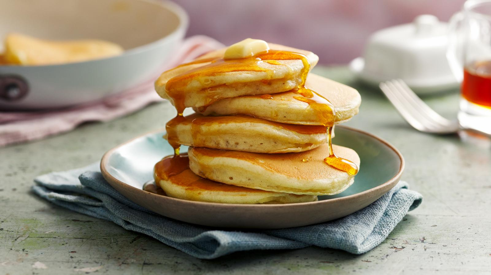

This easy American pancake recipe makes light and fluffy pancakes that are
great for a weekend brunch. Try adding a large handful of fresh blueberries to the batter before cooking.

Ingredients
- 135g/4¾oz plain flour
- 1 tsp baking powder
- ½ tsp salt
- 2 tbsp caster sugar
- 130ml/4½fl oz milk
- 1 large egg, lightly beaten
- 2 tbsp melted butter (allowed to cool slightly) or olive oil, plus extra for cooking
Let's get started
- Sift the flour, baking powder, salt and caster sugar into a large bowl. In a separate bowl
or jug, lightly whisk together the milk and egg, then whisk in the melted butter.
- Pour the milk mixture into the flour mixture and, using a fork, beat until you have a smooth batter.
Any lumps will soon disappear with a little mixing. Let the batter stand for a few minutes.
- Heat a non-stick frying pan over a medium heat and add a knob of butter. When it's melted, add a ladle
of batter (or two if your frying pan is big enough to cook two pancakes at the same time). It will seem
very thick but this is how it should be. Wait until the top of the pancake begins to bubble, then turn it over
and cook until both sides are golden brown and the pancake has risen to about 1cm/½in thick.
- Repeat until all the batter is used up. You can keep the pancakes warm in a low oven, but they taste best fresh out the pan.
- Serve with lashings of real maple syrup and extra butter, if you like.
Some Tips
Try our easy tips for giving the American pancake recipe a twist. For extra-fluffy pancakes substitute self-raising flour for plain flour
and still use the baking powder. Serve the pancakes with fresh strawberries and good vanilla ice cream.
Use half buckwheat flour and half plain flour and serve with maple syrup and bacon. You can also add one teaspoon of ground cinnamon
to the buckwheat batter and serve with caramelised apple slices and thick double cream.
Nutrition Facts
Each serving provides 256 kcal, 7g protein, 35g carbohydrates (of which 9g sugars), 9.5g fat (of which 5.5g saturates)
, 1.5g fibre and 1.2g salt.
Return to top
Return to home